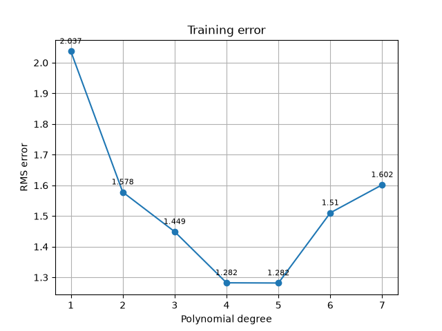
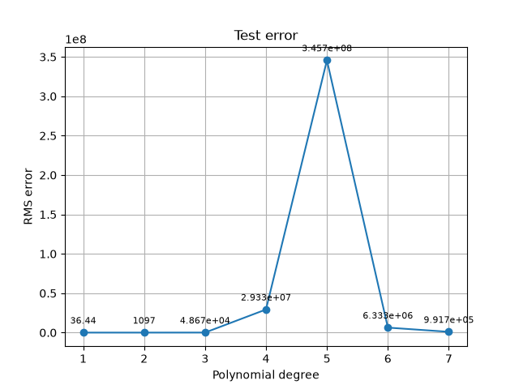
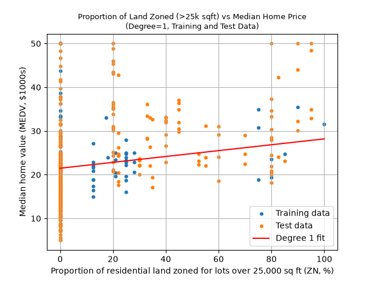
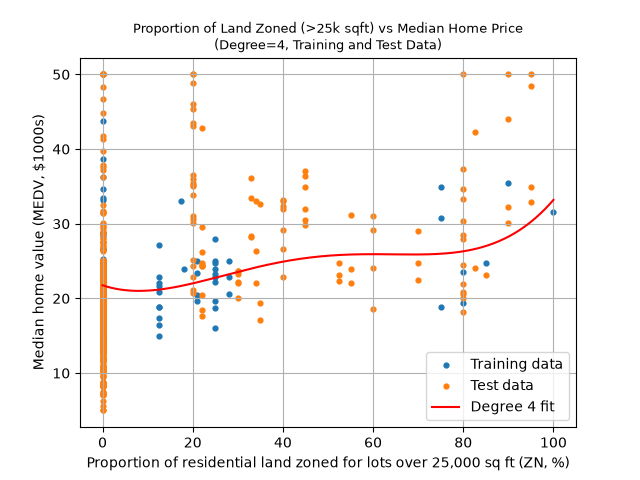
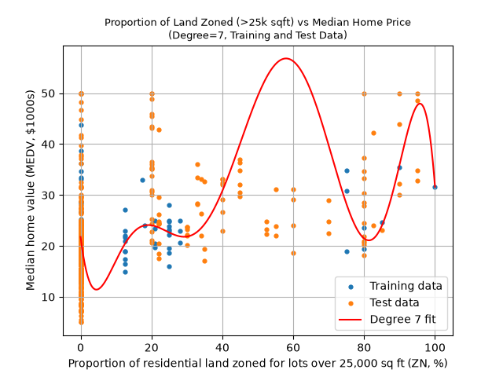
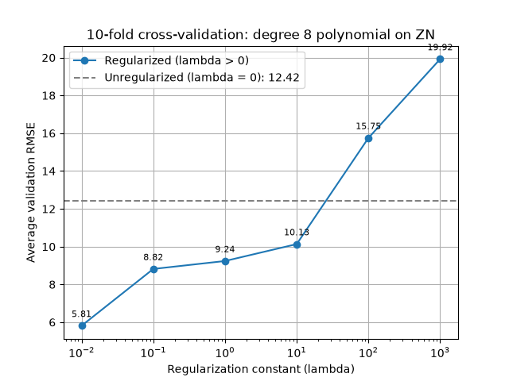
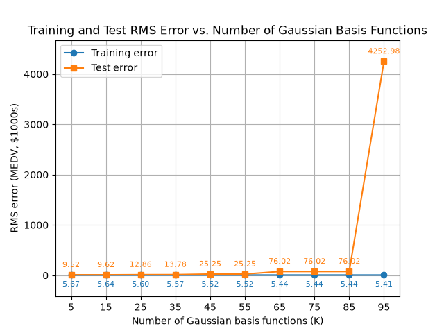
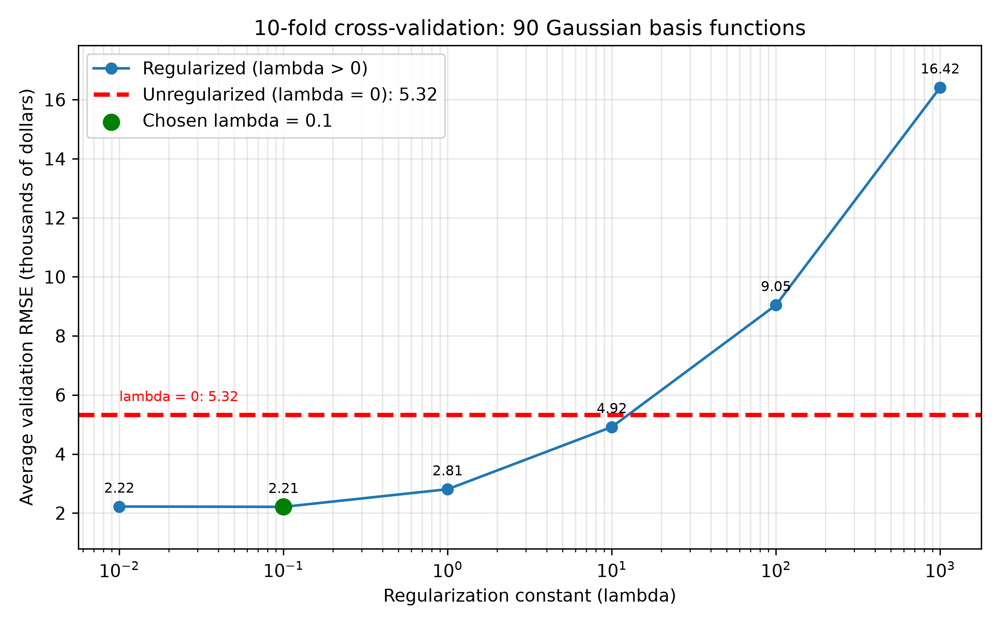

SYDE572 Assignment 2
This can be found at: https://e3kang.github.io.
AI Usage: I used AI to format this website, including setting the fonts, headings, positions and displays of plots, equations, and code for readability. AI was used to place calculated results onto the website.
Question 1: Linear Regression
In this question, you will implement linear basis function regression with polynomial and Gaussian basis. The dataset is the Housing dataset from the UCI repository. The task is to predict median house value from features describing a town.
Part 1a: Polynomial Basis Function
Using the first 100 points as training data, and the remainder as testing data, fit a polynomial basis function regression for degree 1 to degree 7 polynomials. Do not use any regularization. Plot training error and test error (in RMS error) versus polynomial degree.
Training Error vs. Polynomial Degree

Test Error vs. Polynomial Degree

Comments
Training error seems very minimal, and a degree 4-5 polynomial fits the training data quite well.
As for the test data, the error varies wildly. The error is most extreme at degrees 4-6, and interestingly enough, a line is the best fit for the given data (although still having an error of around 36.44, or $36k off).
Part 1b: Degree 1 Weights
Run your polynomial regression using a degree 1 polynomial. Examine the learned weights. What value is chosen for $w_6$, the weight on the 6th feature (average number of rooms per dwelling)? What value is chosen for the weight on the 8th feature (weighted distance to five Boston employment centers)? Do these 2 weights seem reasonable?
All Weights
[-37.9042, -3.45595, 0.00538, -0.16878, 0.0, 21.5154, 8.59096, -0.07924, 0.00763, -0.13991, -0.00763, 0.15456, 0.00664, 0.02623]
Weight on the 6th Feature (Average Number of Rooms per Dwelling)
8.59096
Weight on the 8th Feature (Weighted Distance to Employment Centers)
0.00763
Comments
These weights seem reasonable. It shows that adding an extra room contributes roughly $8,590 to the value of the home, whereas a closer distance to employment centers does not affect the value of a home that much.
This makes sense since a house with more rooms (eg. bedrooms) is usually significantly more expensive, while the distance to employment centers does not dictate its value that much.
Part 1c: 1D Polynomial Regression Visualization
It is difficult to visualize the results of high-dimensional regression. Instead, only use one of the features and again perform polynomial regression. Produce plots of the training data points, learned polynomial, and test data points.
Feature used: proportion of residential land zoned for lots over 25,000 sq ft (ZN).
Degree 1 (Low-Order)

Training error: 5.6951, Test error: 9.3523
Degree 4 (Medium-Order)

Training error: 5.6506, Test error: 9.3897
Degree 7 (High-Order)

Training error: 5.5006, Test error: 10.4224
Comments
The low-order polynomial has the lowest RMSE, fitting the data the best. The high-degree polynomial very obviously curves to fit the training data, but since it is more complex (higher degree), it overfits and performs worse on test data. This shows the need for regularization.
Part 1d: L2-Regularized Polynomial Regression
Implement L2-regularized regression using the first 100 points, and only the 2nd feature. Fit a degree 8 polynomial using each value in {0, 0.01, 0.1, 1, 10, 100, 1000} for λ. Use 10-fold cross-validation to decide on the best value of λ. Produce a semilogx plot of average validation set error versus the regularizing constant λ.
Feature used: #2, proportion of residential land zoned for lots over 25,000 sq ft (ZN).
The code shuffles the 100 training points (in case nearby datapoints had similarities), then split into 10 folds and evaluated RMSE. The dashed line represents lambda = 0, so the unregularized plot.
Average Validation Error vs. Regularization Constant

Results
| λ | Average validation RMSE |
|---|---|
| 0 (unregularized) | 12.42 |
| 0.01 | 5.81 |
| 0.1 | 8.82 |
| 1 | 9.24 |
| 10 | 10.13 |
| 100 | 15.75 |
| 1000 | 19.92 |
Comments
Chosen λ = 0.01, it has the lowest average validation RMSE (5.81).
Without regularization, the degree 8 polynomial overfits the small training folds and the validation error is high (12.42). A very small amount of regularization decreases error by over half. As λ grows past 0.01 the error rises steadily, since the weights are shrunk too aggressively and the model underfits. At λ = 100 and 1000 it performs worse than the unregularized fit.
Question 2: Gaussian Basis Functions
Implement linear basis function regression with Gaussian basis functions. For the centers μj, use randomly chosen training data points.
Part 2e: Gaussian Basis Function Regression
Use the first 100 points as training data, and the remainder as testing data. Fit a Gaussian basis function regression using 5, 15, 25, ..., 95 basis functions (generate a random permutation of points and pick the first K points as the centers of the basis functions). Do not use any regularization. Plot the training error and test error (in RMS error) versus number of basis functions.
Feature used: proportion of residential land zoned for lots over 25,000 sq ft (ZN). Each basis function is φj(x) = exp(a · (x − μj)2), plus a constant bias column.
Where I picked width parameter (a) as a = −1 / (2σ2) with σ equal to half the median distance between training points, giving a = −0.0032.
Training and Test RMS Error vs. Number of Basis Functions

Results
| K (basis functions) | Training RMSE | Test RMSE |
|---|---|---|
| 5 | 5.67 | 9.52 |
| 15 | 5.64 | 9.62 |
| 25 | 5.60 | 12.86 |
| 35 | 5.57 | 13.78 |
| 45 | 5.52 | 25.25 |
| 55 | 5.52 | 25.25 |
| 65 | 5.44 | 76.02 |
| 75 | 5.44 | 76.02 |
| 85 | 5.44 | 76.02 |
| 95 | 5.41 | 4252.98 |
Comments
Training error decreases steadily, which is expected since more basis functions naturally fit training data better.
Test error, on the other hand, increases when more basis functions are added. This is overfitting, since the more basis functions are used, it generalizes worse.
One interesting point is the test error becoming disproportionally large at K=95. After debugging, I found the prediction range to be small at low K (eg. at K=5, it predicted [21.74,34.98]). However, this range grew larger and then became [14.16, 23333.08] at K=95, creating the explosion in test error. It could be the result of numerical instability, as the K=95 weights had both positive and negative weights in the order of millions (10^6).
Part 2f: L2-Regularized Gaussian Regression
Implement L2-regularized regression. Again, use the first 100 points, and this time use all 13 features. Fit a regression model with 90 basis functions using each value in {0, 0.01, 0.1, 1, 10, 100, 1000} for λ. Use 10-fold cross-validation to decide on the best value of λ. Produce a semilogx plot of average validation set error versus the regularizing constant λ.
Normalization: Every feature was standardized with the z-score formula xnorm,j = (xj − μj) / σj, where μj and σj are the mean and standard deviation of feature j over the training points only (a feature with σj = 0 is left unchanged). The targets y were not normalized.
The width a = −0.0935 was chosen with the same median-distance rule as in 2e, computed on the standardized features. The unregularized case (λ = 0) is drawn as a dashed line.
Average Validation Error vs. Regularization Constant

Results
| λ | Average validation RMSE |
|---|---|
| 0 (unregularized) | 5.32 |
| 0.01 | 2.22 |
| 0.1 | 2.21 |
| 1 | 2.81 |
| 10 | 4.92 |
| 100 | 9.05 |
| 1000 | 16.42 |
Comments
Chosen λ = 0.1, which has the lowest average validation RMSE (2.21). λ = 0.01 is close by, so any value in between works.
With 90 basis functions and only 90 training points per fold, the unregularized model can interpolate the training data exactly and overfits, which we saw in part e. A small amount of L2 regularization reduces the error by more than half. As λ grows past 0.1 the weights are shrunk too aggressively and the error increases again. At λ = 100 and 1000 it is worse than no regularization.
← Back to portfolio